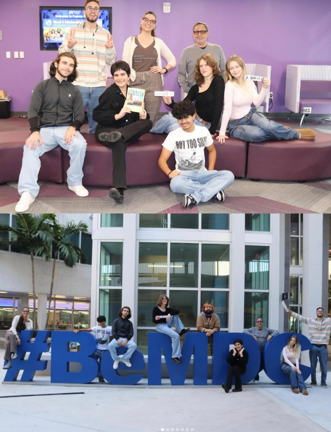

Urbana Magazine
Team Work
Trabajo en Equipo

When I first joined Urbana, I was somewhat skeptical. Not because I didn't like the idea behind this project, but because of the time it could take up in a semester as busy as spring. But in reality, it was the best thing that could have happened to me for my personal development. The fact that we didn't agree on every idea in the weekly meetings we held forced us to consider and listen to everyone's ideas to reach a common ground, allowing me to develop an empathy by "putting myself in someone else's shoes" that every good leader must have. Furthermore, as the Magazine's Social Media Manager, I had to consolidate diligence when uploading, keeping updated, and promoting the magazine as much as possible, thus helping me develop as a leader in my community.
Cuando primero me meti a Urbana estaba algo exceptico. No porque no me gustara la idea detras de este proyecto si no por el tiempo que me podria ocupar en un semestre tan ocupado como el spring. Pero en realidad fue lo mejor que me pudo haber pasado para mi desarrollo personal. El hecho de no coincidir en cada idea en las reuniones semanales que haciamos nos hacia tener que plantearnos y escuchar las ideas de todos para llegar en un punto en comun, permitiendome desarrollar una empatia al "ponerme en los zapatos de otro" que todo buen lider debe de tener. Ademas que como Social Media Manager del Magazine tuve que consolidar una diligencia a la hora de subir, mantener actualizado y promover la revista cuanto fuera posible, ayudandome asi a desarrollarme como un lider en mi comunidad.